エアーロータリージョイント製品一覧
空圧用ロータリージョイント（エアーロータリージョイント）の標準・特注モデル。最小注文数量は1個です。製作期間：標準カタログ品は入金後20暦日（輸送期間を除く）。製作期間：特注品は入金後最大30暦日（輸送期間を除く）。各カタログ製品ページから2D図面とSTEP（AP214）をダウンロードできます。
エンジニアリング・選定
ロータリージョイントの型式をオンラインで比較
圧力、回転数、流路数、取付方法、提供図面を一覧表で比較できます。
必要な構成からロータリージョイントを選ぶ
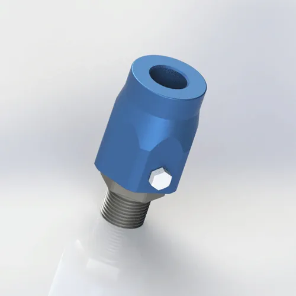
2D PDF
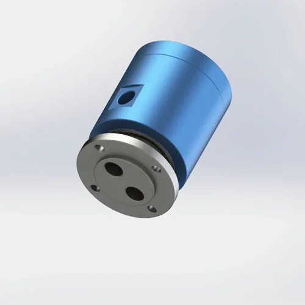
2D PDF
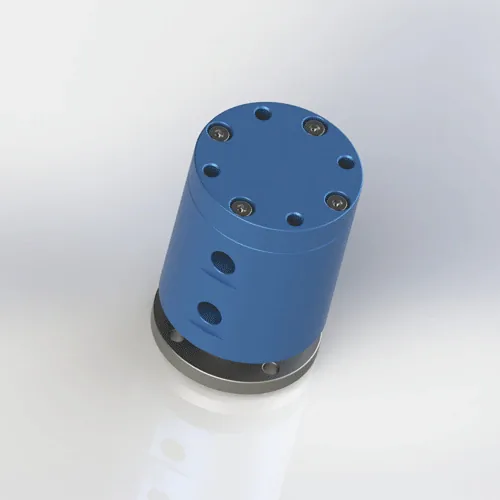
2D PDF
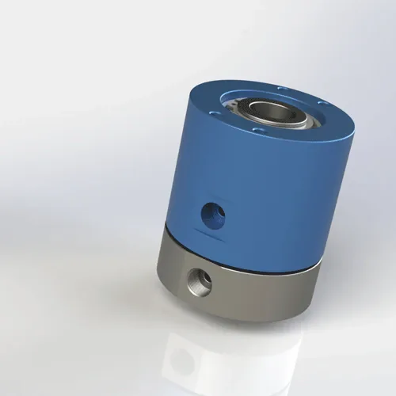
2D PDF
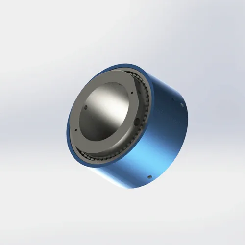
ヘビーデューティ
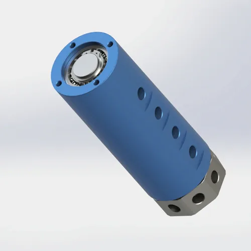
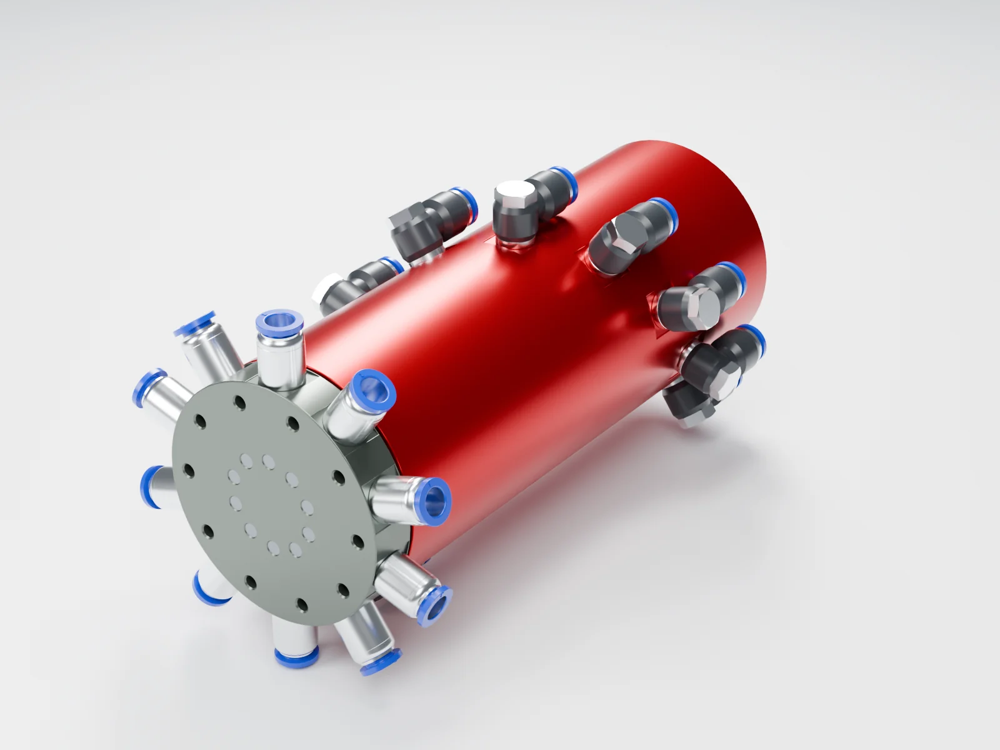
BP-10P-0001 · 10流路
独立した10系統の空気流路1 MPa100 min⁻¹（間欠回転）20 × G1/86061アルミニウム合金Oリング外径8 mmチューブ用継手付き
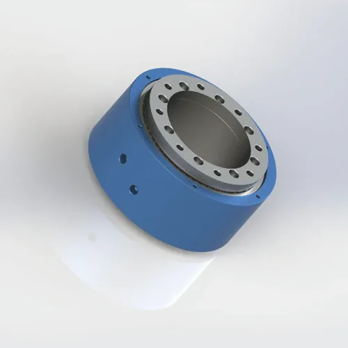
2入力／4出力1 MPa
BP-2P-95-0005 · 2入力／4出力
独立2流路
G1/8入口 × 2
Ø4出口 × 4（クランプ2・解除2）
最大Ø162 × 全長86 mm
最高 1 MPa
最高 200 min⁻¹
アルミ合金6061
$218/個 · 100+
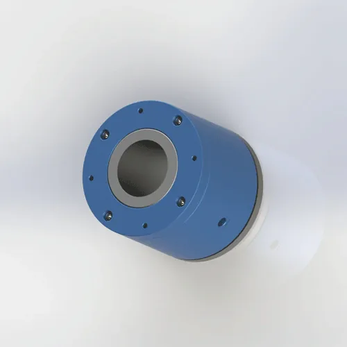
粉じん環境向け
BP-2P-50-0001・保護カバー＋ラビリンス
2入力・2出力
標準使用流体：空気
固定側4 × M5／回転側6 × M5
最高 1 MPa
最高100 min⁻¹
AL6061
PTFEシール＋Oリング
保護カバー・ラビリンス構造
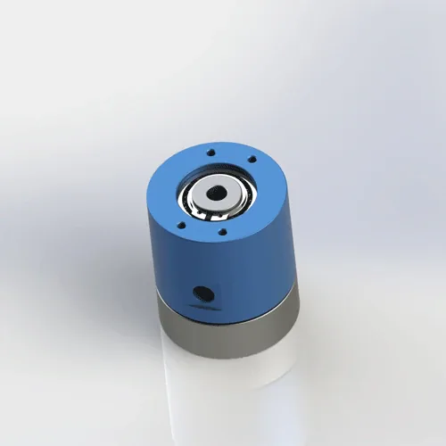
2D PDF
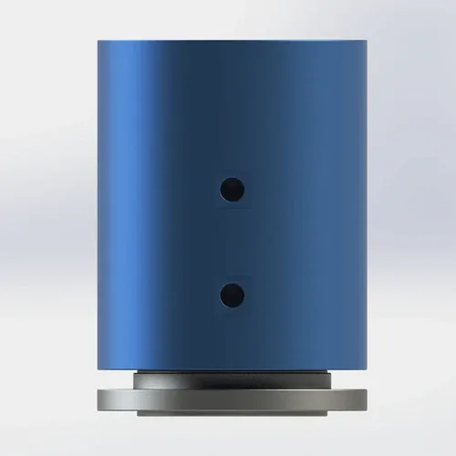
2D PDF
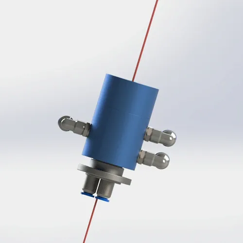
2D PDF
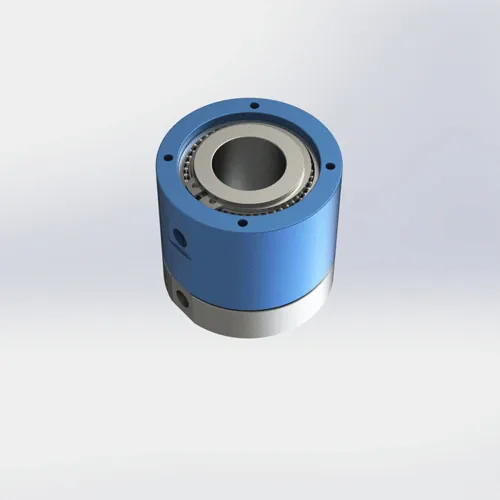
2D PDF
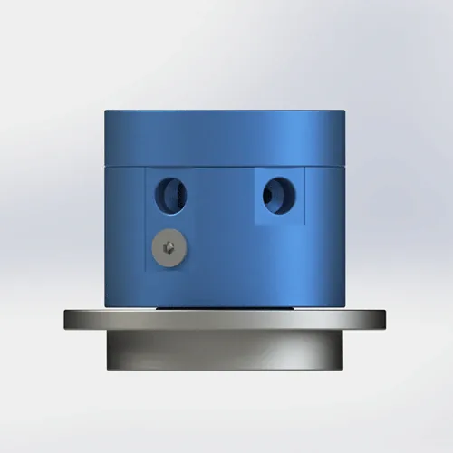
2D PDF
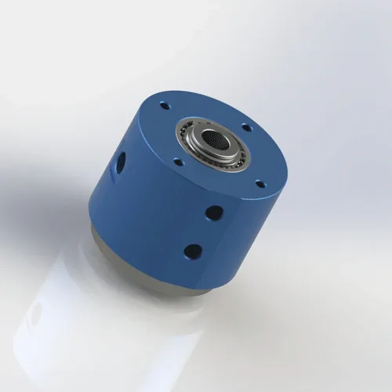
2D PDF